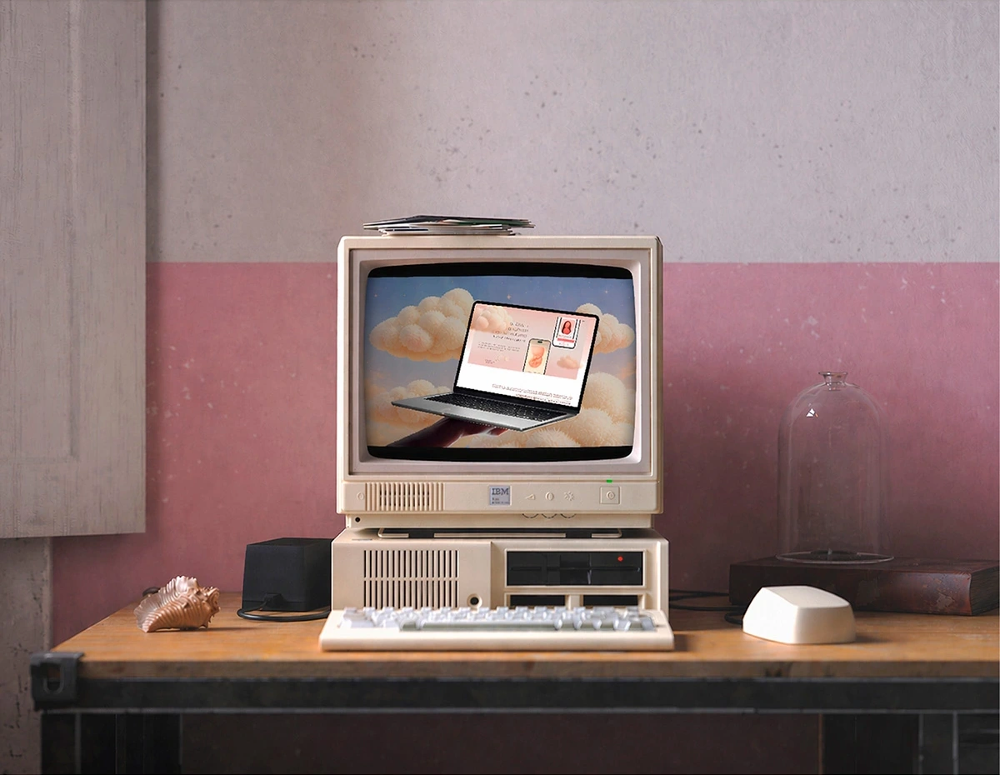
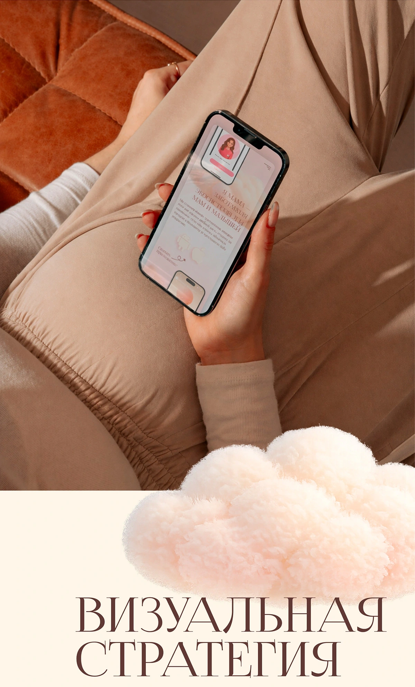
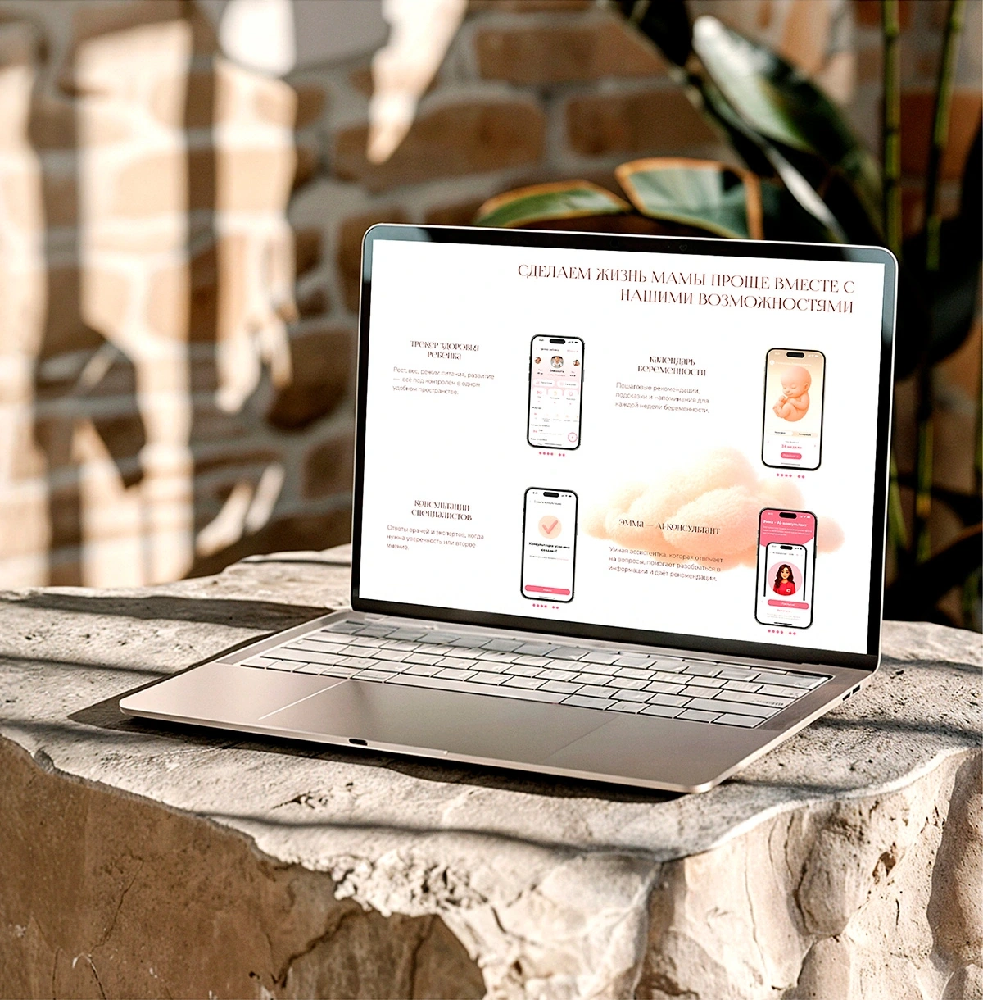
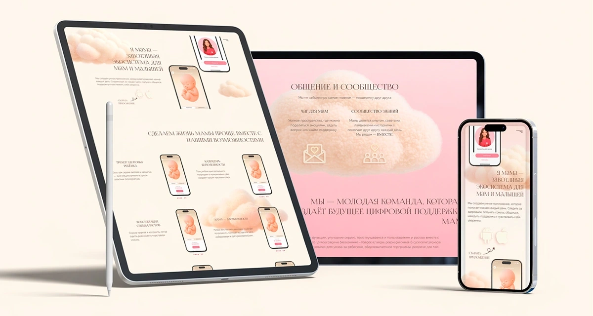
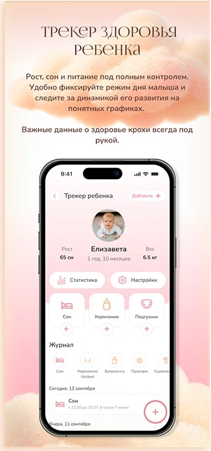
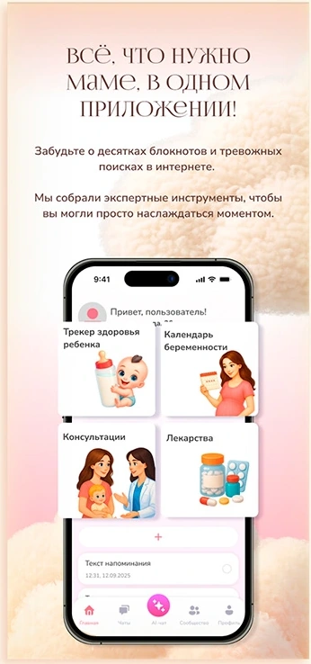
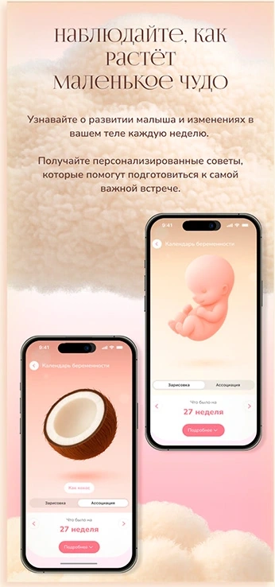
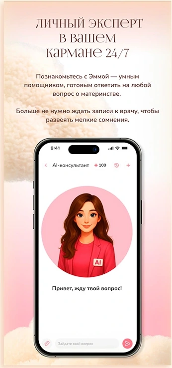

Мы создали лендинг для приложения, которое помогает мамам чувствовать себя спокойнее, увереннее и не оставаться наедине с вопросами.
Это не просто сайт — это точка входа в продукт, который:
- снижает тревожность
- упрощает повседневные задачи
- даёт поддержку в нужный момент.
С первых секунд пользователь понимает: «здесь обо мне позаботятся».

Сделать так, чтобы мама:
- сразу увидела ценность продукта
- узнала себя в сценариях
- почувствовала доверие
- захотела попробовать приложение.
Главный фокус — не «что умеет продукт», а как он облегчает жизнь каждый день. А также на визуал.

Мы отказались от перегруженности и сделали ставку на эмоцию:
- мягкие розово-кремовые оттенки
- облака как символ поддержки и безопасности
- лёгкие композиции без давления
- акцент на продукте через экраны.
Визуал работает как аргумент: если интерфейс такой заботливый — значит и продукт такой же.
- понятная структура
- быстрый просмотр информации
- акценты на ценности
- отсутствие перегрузки.
Пользователь не думает «что здесь происходит». Он думает: «мне это нужно».
Мы не учим и не навязываем. Мы поддерживаем.
- просто
- тепло
- по делу.
Без давления, но с доверием.

Лендинг, который:
- вызывает эмоциональный отклик
- быстро доносит ценность
- снижает барьер входа
- мотивирует скачать приложение.
Не просто красиво — эффективно.

Стор-карточки, которые говорят за продукт. Минимум слов — максимум смысла. Каждая карточка раскрывает ключевую ценность приложения и мягко ведёт пользователя к установке.
Листайте карточки ↔



